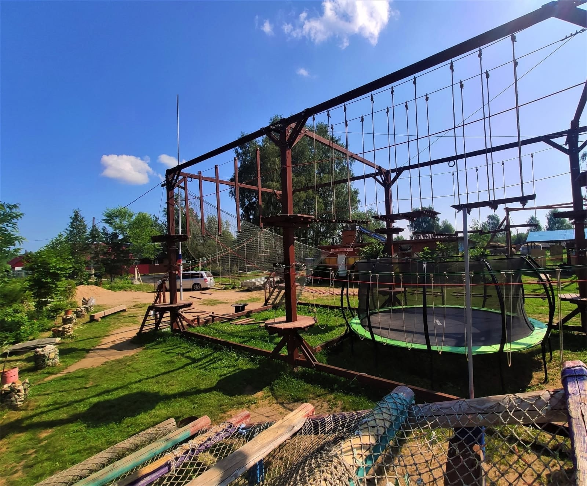

О нас
База отдыха в Боровичах — место, куда хочется вернуться
« Мы команда единомышленников, которая организует все виды активного туризма и развлечения в Боровичах для детей и взрослых: праздники в русском и пиратском стиле, командообразующие этапы и военизированные игры, дни рождения, свадьбы и календарные праздники на природе.
У нас вы найдёте отдых на любой вкус: водные походы на рафтах, велопоходы и пешие походы по живописным местам Новгородской области. Активный отдых в Боровичах — это то, что мы делаем лучше всего. Мы создаём лучшие условия для семейного и корпоративного отдыха на природе.
Наши инструкторы имеют за плечами многолетний опыт и обеспечивают полную безопасность на всех маршрутах. Каждый гость уезжает с улыбкой и желанием вернуться снова. Если вы ищете, куда сходить в Боровичах или где отдохнуть с детьми в Боровичах — вы нашли идеальное место.
Приезжайте за драйвом, свежим воздухом и искренними эмоциями — мы ждём вас на нашей базе отдыха!
